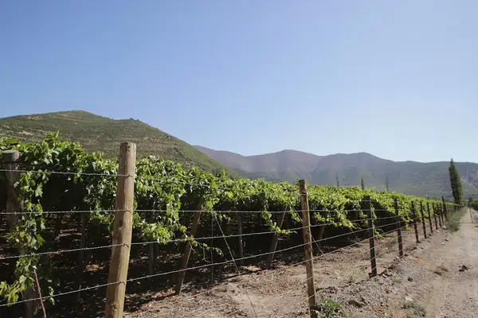

Home › Wine regions › Aconcagua Valley
Aconcagua Valley wine region

Photo: celso costa on Unsplash
Ripe reds inland, cooler styles on the coast.
A long, narrow country with Pacific and Andean influences, from desert north to cool south.
CountryChile
Notable producers in Aconcagua Valley
- Errázuriz
- Seña
- Von Siebenthal
Aconcagua Valley wines to try
Errázuriz Don Maximiano Founder's Reserve
Aconcagua Valley · Aconcagua · Cabernet Sauvignon, Carménère, Petit Verdot
Chile's classic icon: cassis, black cherry, graphite and polished tannins.
Food: Roast beef, lamb, aged cheese
More wine regions in Chile
Maipo ValleyCasablanca ValleyLeyda ValleyLimarí ValleyElqui ValleyCachapoal ValleyCuricó ValleyMaule ValleyItata ValleyBiobío ValleyColchagua Valley
See Aconcagua Valley on the wine map
Support The Wine Reference
This guide is free, with no paywall. If it helped you choose a bottle, you can buy me a glass and keep it growing.
🍷 Buy me a glass